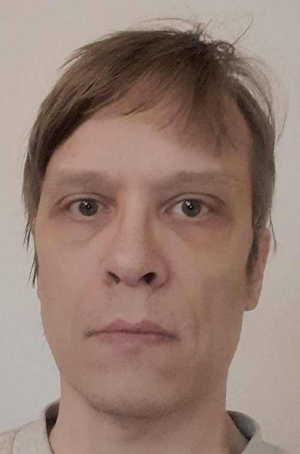

Lyhyt historia mitä olen tehnyt 20 vuoden sisään

Nimeni on Antti Pulkkinen. Olen entinen DI elektroniikasta (tai sähkötekniikasta), mutta oman alan hommia en ole tehnyt vaan osaan paremmin ohjelmointia. Paperit nykyiseen ammattiin sain 2009. Opiskelun ohella olin joskus kesätöissä, mutta sitten en ole pahemmin ollut. Olen ollut vuodesta 2009 työtön, vaikka tosin 2014 sain idean eräästä 3d rutiinistani tehdä toimivan pelin, joten sen vuoden jälkeen tein sitä aina vuoteen 2022, jolloin peli oli valmis ja julkaisin sen. Firmakin oli pystyssä. Peli kuitenkaan ei mennyt kaupaksi, joten lopetin firman ja sen jälkeen aloin lukea web-ohjelmointia. Se alkoi vuonna 2023. Aluksi olin LUT:ssa aikuisopiskelijana, sitten luin yksittäisiä kursseja Metropoliassa ja lopuksi päädyin Taitotaloon.